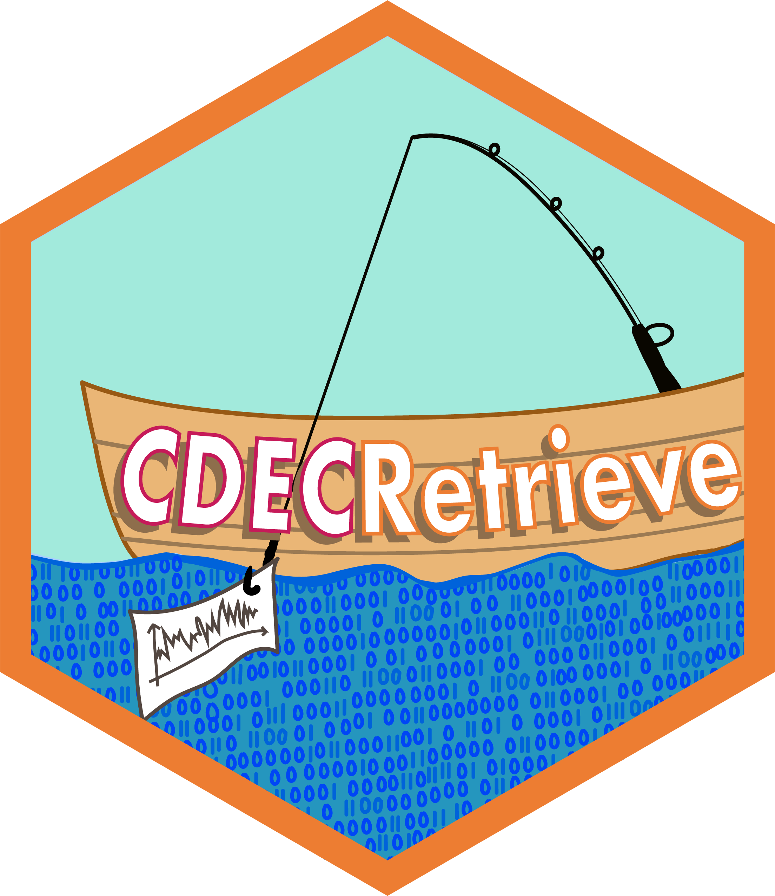

CDECRetrieve 
What is CDECRetrieve?
CDECRetrieve uses the web services provided by the California Data Exchange Center here as a backend to allow users to download data with a single function call. CDECRetrieve specifically uses the SHEF download service due to the fact that it is the most robust of the services. You can learn more about the SHEF format here.
The design of this package maps different CDEC url endpoints into “services” that make sense. For example there is a datasets service that allows the user to view all datasets available at a given location. There is query/data service that allows the user to bring observations into memory. The goal is to allow a workflow where a user can pipe responses from one service into another, and eventually into the data service to get the data, and be able to automate this process.
Please see the Details section below for limitations and possible annoyances inherited from the CDEC service.
Installation
remotes::install_github("flowwest/CDECRetrieve")Basic Usage
CDECRetrieve exposes several useful functions to query services from CDEC. The main function in the package is cdec_query,
# download data from kwk, sensor 20, duration is event type
kwk_flow <- cdec_query("KWK", "20", "E", "2000-01-01", "2002-01-01")The data returned,
# A tibble: 17,544 × 5
agency_cd datetime location_id parameter_cd parameter_value
<chr> <dttm> <chr> <chr> <chr>
1 CDEC 2000-01-01 00:00:00 KWK 20H 5401
2 CDEC 2000-01-01 01:00:00 KWK 20H 4937
3 CDEC 2000-01-01 02:00:00 KWK 20H 5234
4 CDEC 2000-01-01 03:00:00 KWK 20H 5234
5 CDEC 2000-01-01 04:00:00 KWK 20H 5273
6 CDEC 2000-01-01 05:00:00 KWK 20H 5282
7 CDEC 2000-01-01 06:00:00 KWK 20H 5090
8 CDEC 2000-01-01 07:00:00 KWK 20H 5023
9 CDEC 2000-01-01 08:00:00 KWK 20H 5014
10 CDEC 2000-01-01 09:00:00 KWK 20H 5023
# ... with 17,534 more rowsVisualize these flows,
library(dplyr)
library(ggplot2)
kwk_flow %>%
filter(parameter_value >= 0) %>% # sentinel values -9998 and -9997 are present
ggplot(aes(datetime, parameter_value)) +
geom_line()
Note that appart from replacing sentinel values with appropriate NA values, the package does no QA/QC. This can be seen in the plot above, where suspicoius values are apparent.